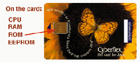
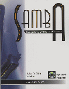

A Linux Journal Preview: This article will appear in the January 1999 issue of Linux Journal.
When the LJ staff decided to have Editor's Choice Awards this year in addition to the Readers' Choice, I agreed without truly realizing how difficult it would be to make decisions. So many fine products that support Linux are available today, and the number grows daily. This has indeed been a good year for Linux users, beginning with the announcement that Netscape would become open source and proceeding through the announcements of support for Linux by all the major database companies.
I must admit this one wasn't a hard decision. It is my belief that Netscape's announcement that Communicator would be open source started it all. This announcement galvanized the world to find out about the Open Source movement and the Linux operating system that was responsible for its creation. Linux needed a big company in its corner in order for the word to spread, and Netscape provided just the initiative that was needed.
This was probably the most difficult decision, so it ended in a tie. So many new products are available for Linux this year; finally, the flood of software applications we have all been waiting for is happening. However, the one thing everyone has always said Linux needs to become competitive with the commercial operating systems is a user-friendly desktop--both GNOME and KDE are filling this need.

While I was given some interesting suggestions for this one, I never had any doubt that the Smart Card was the proper choice. A credit card with a Linux CPU on it is just too extraordinary. The computer chip embedded in the card stores not only mundane information about the card holder, but also biometric information that can be used for identification--talk about great security! The suggestion most people gave me was the PalmPilot, which is indeed a cool product, but even though Linux runs on it, the port was done by programmers outside 3Com. According to Mr. Bob Ingols, a 3Com staff member, 3Com does not support Linux and does not plan to.
Corel Computer was the first company to declare Linux as its operating system of choice and sell computers with Linux pre-installed. With the continuing growth of Internet popularity, the network computer's day has come and the NetWinder is one of the best. It is small, powerful and easily configured. Best of all, it comes with Linux. Debian's recent port to the ARM architecture means that it too will run on the NetWinder. A close second was the Cobalt Qube Microserver--not only is it a great little server, it's cute too.
Another tough one. My initial choice was the GIMP, but it's been around for some time (my first thoughts always seem to be free software). At any rate, a port of a major database to Linux has long been anticipated, and Informix made the breakthrough with other database companies following suit. With support from Informix, Linux can now enter the business ``big leagues''. A close second, in my mind, is Corel's WordPerfect 8 for Linux for the same reason--to be accepted in the workplace, Linux needs this product.

Some might call ``foul'' on this one, because it is published by SSC. However, this award is for the book and the author, John Blair, not for the publisher. Samba: Integrating UNIX and Windows was needed and its popularity has proved it. John has written a comprehensive book of interest to all who are running multi-OS shops. The book has been endorsed by the Samba Team, who has gone so far as to make John a member. If the award had been for ``best all-around book on Linux'', I would have given it to the ever-popular (with good reason) Running Linux by Matt Welsh, published by O'Reilly & Associates.
In our October issue, we had a great article called ``Linux Print System at Cisco Systems, Inc.'' by Damian Ivereigh. In it, Damian described how Cisco was using Linux, Samba and Netatalk to manage approximately 1,600 printers worldwide in mission-critical environments. He also described how he did it and supplied the source code he used, so that others could also benefit from this solution--a wonderful way to contribute to the Linux community.
Linux Journal uses Linux as its operating system of choice on all but one lone machine. For layout, we must have an MS Windows 95 machine in order to run QuarkXPress. Each month we hold our breath during the layout period hoping that when Windows crashes (it always does), it won't be at a critical juncture. Crashing for no apparent reason creates extra work for Lydia Kinata, our layout artist, and much stress for all of us each month. We are more than ready to be rid of this albatross and have a total Linux shop. Next, like everyone else, we'd like Adobe to port all its products to Linux.
![[ TABLE OF CONTENTS ]](../gx/indexnew.gif)
![[ FRONT PAGE ]](../gx/homenew.gif)